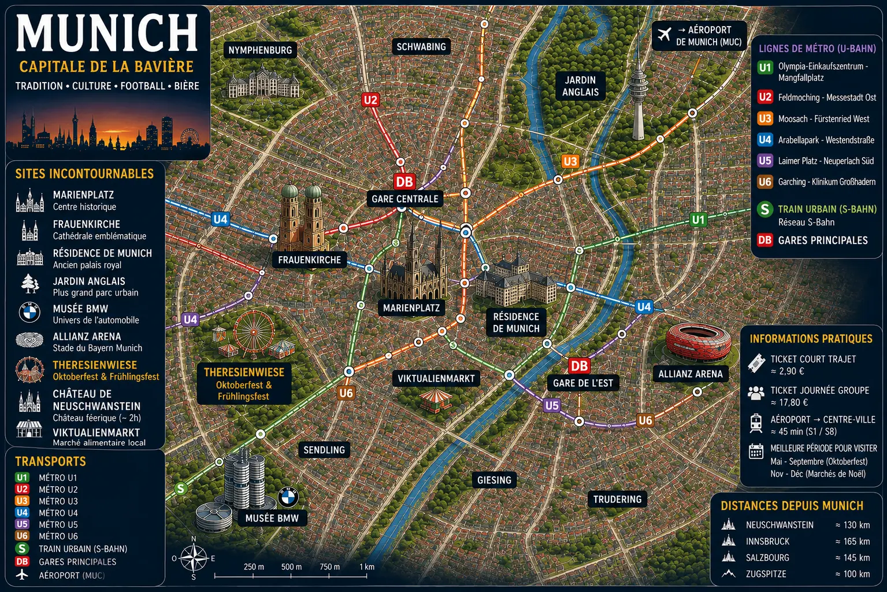
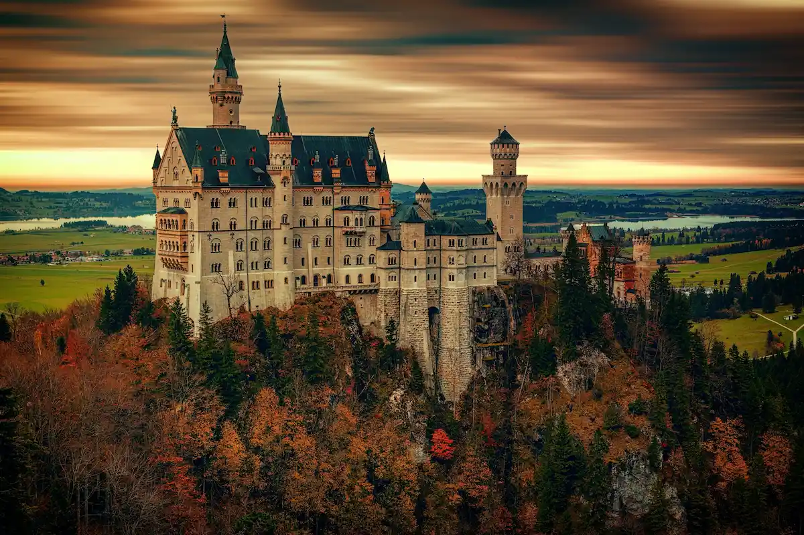
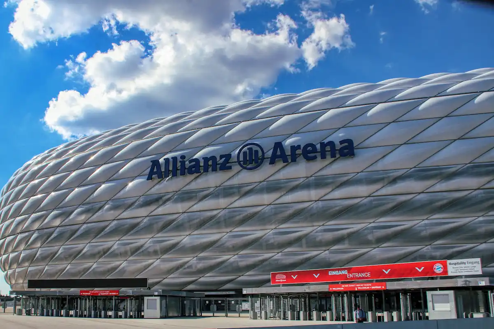
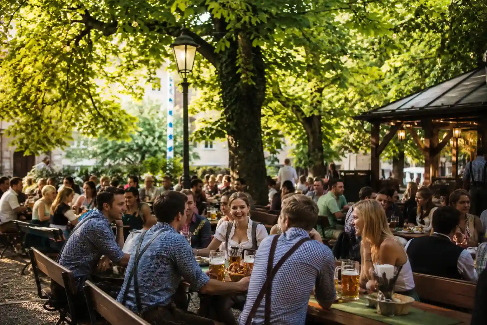
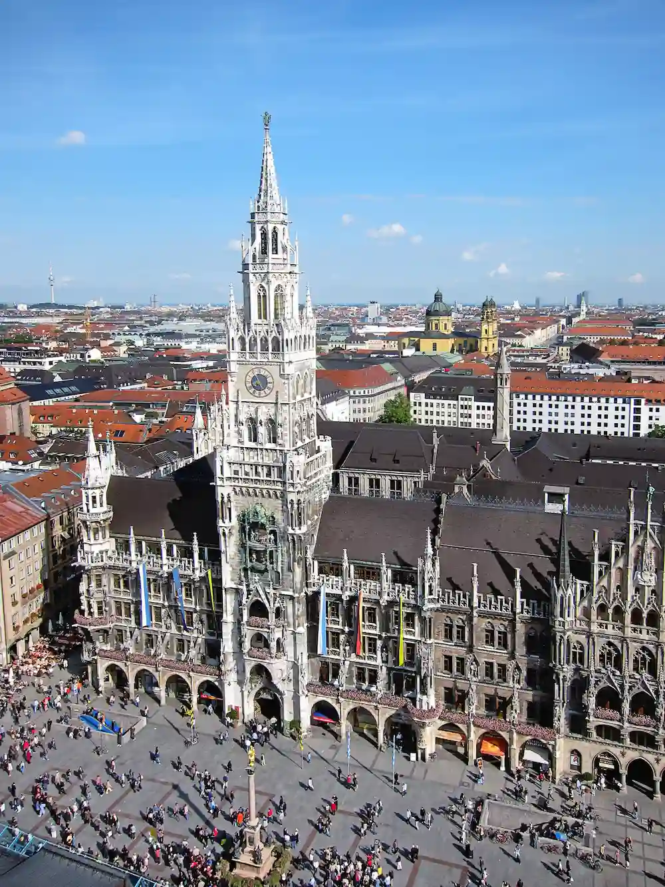
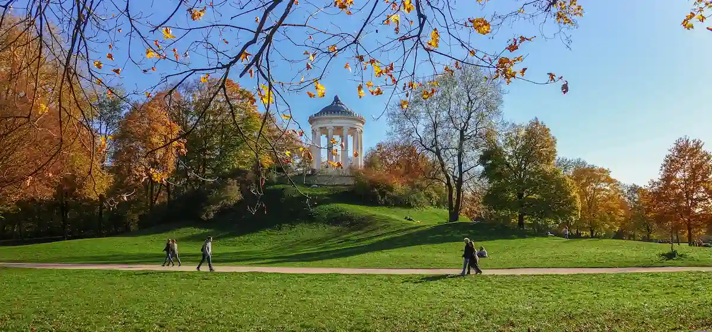
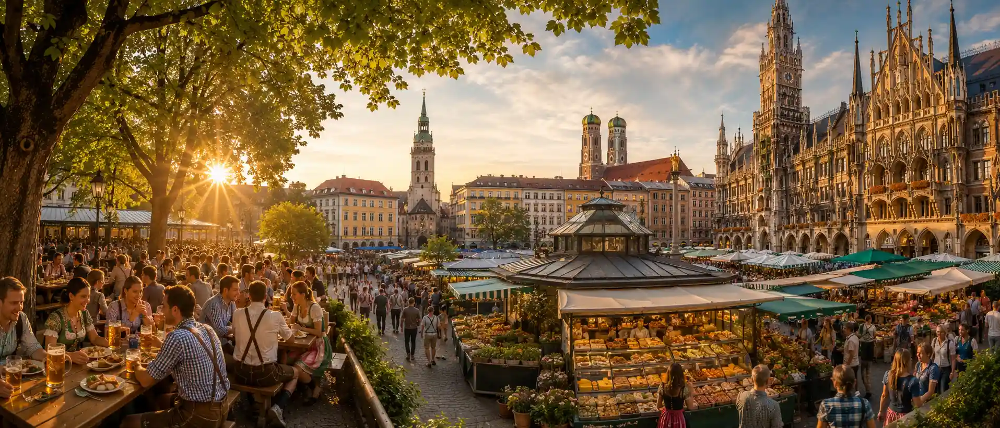
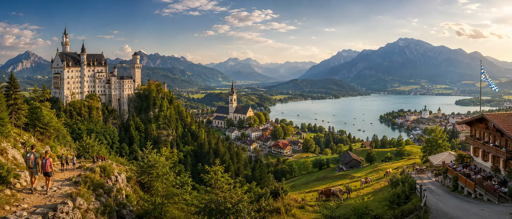
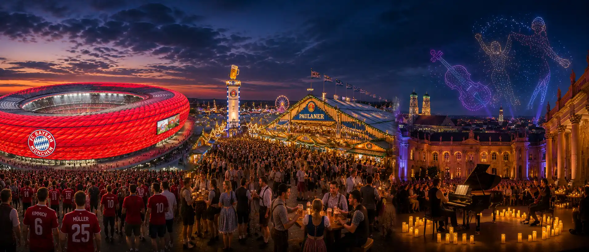
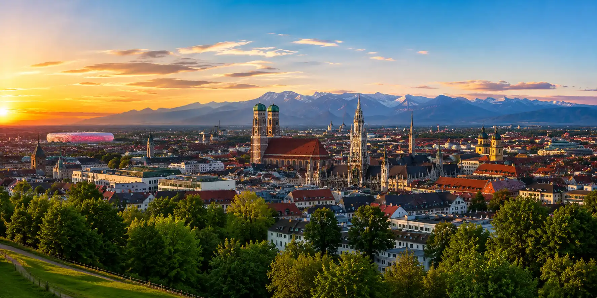

Munich
Explore Munich entre biergartens historiques, Allianz Arena, palais bavarois, marchés de Noël et paysages alpins.
Allianz Arena • Marienplatz • BMW • Oktoberfest • Bavière
Biergartens, spécialités locales et ambiance unique.
Métro, tramways et trains pour explorer facilement la ville.
Neuschwanstein, Alpes bavaroises, Salzbourg et lacs alpins.
Oktoberfest, marchés de Noël, festivals, concerts et grands événements bavarois.
Voir l'agenda →Capitale de la Bavière, Munich séduit par son équilibre entre traditions bavaroises, architecture élégante et modernité européenne.
De Marienplatz à l’Allianz Arena, des biergartens historiques aux musées renommés, la ville offre une expérience unique mêlant culture, gastronomie et football.
Entre Oktoberfest, marchés de Noël, palais royaux et excursions vers les Alpes, Munich est l’une des destinations les plus emblématiques d’Allemagne.

Entre traditions bavaroises, palais royaux, football européen et excursions vers les Alpes, Munich propose des expériences uniques qui marquent durablement les voyageurs.

Le château qui inspira les contes de fées de Disney. Niché au cœur des Alpes bavaroises, il figure parmi les sites les plus visités d'Allemagne.
🎟️ Voir les billets
Découvrez les coulisses du stade du Bayern Munich et l'une des enceintes sportives les plus impressionnantes d'Europe.
🎟️ Réserver la visite
Partagez une grande table bavaroise sous les châtaigniers et découvrez l'ambiance conviviale qui fait la réputation de Munich.

Le cœur historique de Munich avec son célèbre hôtel de ville, ses façades élégantes et son atmosphère typiquement bavaroise.

L'un des plus grands parcs urbains d'Europe où se côtoient surfeurs, biergartens et vastes espaces verts.

Partez depuis Munich pour découvrir deux châteaux emblématiques de Bavière lors d'une excursion spectaculaire entre palais royaux et paysages alpins.
🎟️ Voir l'excursionLe réseau MVV permet de rejoindre facilement Marienplatz, la gare centrale, l’Allianz Arena, l’English Garden, les musées et les principaux quartiers de Munich.
Site officiel MVV →Un pass pratique pour profiter des transports en commun tout en bénéficiant de réductions sur plusieurs attractions, musées et expériences à Munich.
Découvrir le pass →Munich se découvre très bien à vélo grâce à ses pistes cyclables, ses parcs, ses berges et ses itinéraires agréables autour du centre-ville.
Louer un vélo →Une voiture peut être utile pour explorer les châteaux bavarois, les lacs alpins, la Route romantique ou certaines destinations autour de Munich.
Réserver une voiture →Berlin, Francfort, Salzbourg, Nuremberg ou les Alpes bavaroises sont facilement accessibles grâce aux nombreuses liaisons ferroviaires au départ de Munich.
Réserver un train →L’aéroport de Munich est l’un des plus grands hubs d’Allemagne et permet de rejoindre facilement le centre-ville en S-Bahn.
Vols & informations →Le meilleur choix pour une première visite. Vous serez au cœur de Munich, à proximité des principaux monuments, des restaurants et des sites incontournables.
Quartier animé et élégant apprécié pour ses cafés, ses biergartens, ses boutiques et sa proximité avec l’English Garden.
Idéal pour les voyageurs recherchant un environnement plus calme, proche des espaces verts et des balades tout en restant à quelques minutes du centre-ville.
Pratique pour les arrivées en train et les excursions vers les Alpes, Salzbourg ou les autres grandes villes allemandes.
Un secteur intéressant pour les amateurs de football souhaitant séjourner à proximité du stade du Bayern Munich et des grands axes de transport.
Comparez les hébergements dans les principaux quartiers de Munich.
Entre biergartens traditionnels, spécialités bavaroises, marchés gourmands et restaurants contemporains, Munich offre l'une des expériences culinaires les plus authentiques d'Allemagne.

Partagez une grande table sous les arbres et découvrez l'une des traditions les plus emblématiques de Munich autour d'une bière bavaroise et de spécialités locales.
Le célèbre marché de Munich rassemble producteurs locaux, spécialités bavaroises et terrasses animées au cœur du centre historique.
Autour de la place principale de Munich, de nombreuses brasseries historiques et restaurants traditionnels permettent de découvrir la véritable cuisine bavaroise.
Entre châteaux de contes de fées, lacs alpins, villages bavarois et sommets spectaculaires, les environs de Munich offrent certaines des plus belles excursions d'Allemagne.

Perché au cœur des Alpes bavaroises, le château de Neuschwanstein est l'un des monuments les plus célèbres d'Europe et aurait inspiré les châteaux de Disney.
🏰 Voir l'excursion →La ville natale de Mozart séduit par son centre historique classé à l'UNESCO, son patrimoine baroque et son magnifique cadre alpin.
🇦🇹 Découvrir Salzbourg →Atteignez le plus haut sommet d'Allemagne et profitez d'un panorama exceptionnel sur les Alpes bavaroises et autrichiennes.
🏔️ Découvrir la Zugspitze →Entouré de montagnes, le lac de Tegernsee est l'une des destinations préférées des Bavarois pour profiter de la nature à moins d'une heure de Munich.
Découvrez villages médiévaux, remparts historiques et paysages de carte postale le long de l'un des itinéraires les plus célèbres d'Allemagne.
🛣️ Voir l'excursion →Entre football européen, Oktoberfest, concerts internationaux et expériences immersives, Munich figure parmi les villes les plus dynamiques d'Allemagne pour vivre des événements mémorables.

Assistez à un match du Bayern Munich ou découvrez l'Allianz Arena, l'un des stades les plus impressionnants d'Europe.
🎟️ Voir les billetsLe plus célèbre festival de bière au monde attire chaque année des millions de visiteurs venus découvrir les traditions bavaroises.
🍺 Réserver l'expérienceDécouvrez les célèbres concerts Candlelight dans des lieux emblématiques de Munich pour une expérience musicale unique à la lueur des bougies.
🎻 Voir les concertsUne expérience immersive spectaculaire mêlant musique et chorégraphies lumineuses réalisées par des centaines de drones dans le ciel.
🚁 Découvrir l'événementMunich accueille toute l'année des concerts internationaux, spectacles et événements culturels dans ses principales salles et arènes.
🎟️ Voir les événementsL'allemand est la langue officielle. L'anglais est largement compris dans les hôtels, restaurants, attractions touristiques et transports.
L'euro (€) est utilisé partout à Munich. Les cartes bancaires sont acceptées dans la majorité des commerces, même si certains établissements traditionnels privilégient encore les paiements en espèces.
L'Allemagne utilise les prises de type C et F avec une tension de 230 V. Aucun adaptateur n'est nécessaire pour la plupart des voyageurs européens.
Trois à quatre jours permettent de découvrir les principaux quartiers, les biergartens, les musées, l'Allianz Arena et les incontournables de Munich.
De mai à octobre pour profiter des biergartens et des événements en plein air. Septembre est particulièrement apprécié grâce à l'Oktoberfest.
Pour un séjour confortable, prévoyez généralement entre 120 € et 250 € par jour selon l'hébergement, les activités et les restaurants choisis.
Les excursions vers Neuschwanstein, Linderhof ou les châteaux bavarois sont très demandées. En haute saison, mieux vaut réserver plusieurs jours à l'avance.
Munich possède aussi des palais, musées, parcs, marchés, biergartens et excursions alpines qui méritent largement d'être découverts.
Le réseau U-Bahn, S-Bahn, tramway et bus permet de rejoindre facilement les principaux quartiers, l'Allianz Arena, la gare et l'aéroport.
Neuschwanstein, Salzbourg, la Zugspitze, les lacs alpins et la Route romantique font partie des plus belles expériences à vivre depuis Munich.
Même en été, la météo peut changer rapidement, surtout si vous partez vers les Alpes. Prévoyez une veste légère ou imperméable.
Deux jours permettent de voir le centre, mais trois à quatre jours sont préférables pour profiter des musées, biergartens, palais et excursions autour de Munich.
Trois à quatre jours permettent de découvrir les principaux quartiers, les biergartens, les musées, les palais royaux et plusieurs excursions autour de Munich.
L'excursion au château de Neuschwanstein figure parmi les expériences les plus populaires. Dans la ville, Marienplatz et l'Allianz Arena comptent parmi les incontournables.
De mai à octobre, les températures sont généralement agréables pour profiter des biergartens, des parcs et des événements. Septembre attire également de nombreux visiteurs grâce à l'Oktoberfest.
Munich fait partie des villes les plus onéreuses d'Allemagne, notamment pour l'hébergement. En revanche, les transports en commun et certaines activités restent accessibles.
Le réseau MVV regroupe métro (U-Bahn), trains urbains (S-Bahn), tramways et bus permettant de rejoindre facilement l'ensemble de la ville.
Altstadt, Marienplatz, Schwabing, l'English Garden et les environs de l'Allianz Arena figurent parmi les secteurs les plus intéressants à explorer.
L'English Garden, le Deutsches Museum, l'Allianz Arena, le château de Nymphenburg et certaines excursions alpines constituent d'excellentes activités familiales.
Oui. Munich dispose d'un vaste réseau cyclable et de nombreux espaces verts. Le vélo est l'un des meilleurs moyens de découvrir la ville et l'English Garden.
